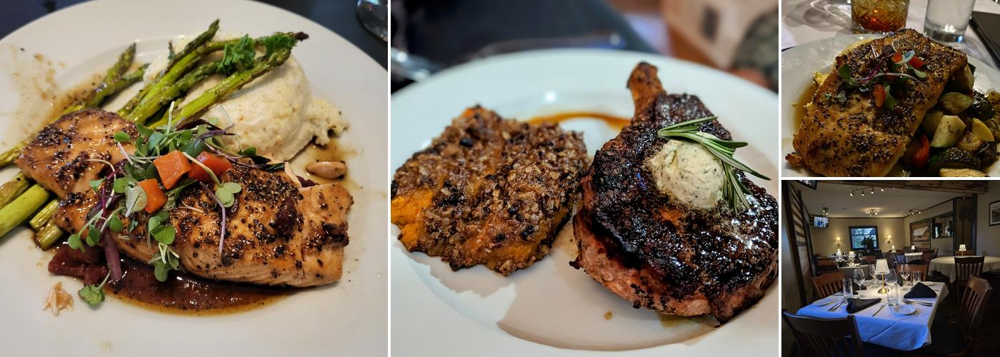
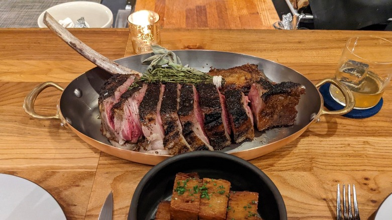
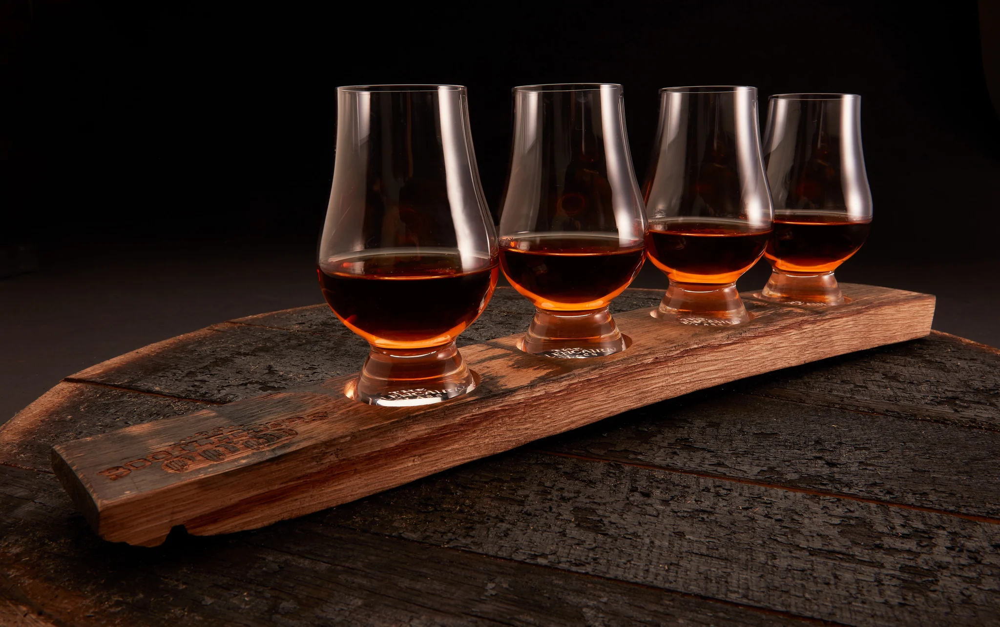

The menu.
Comfort has a place at the table. So do oysters, a well-cooked ribeye and a pour worth lingering over.
Start at the table.
Share a first plate or keep it to yourself. Market items may change with availability.
For the table
Soup & greens

From land & water.
Steaks, chops and seafood with the sides already considered. Interchanging your paired side is always welcome.
Steaks & chops
Seafood & Southern favorites
Consuming raw or undercooked meats, poultry, seafood, shellfish or eggs may increase your risk of foodborne illness. Please tell your server about allergies or dietary needs.
Made for the hour.
Classic roots with an Oaklawn point of view. Ask your server about martinis, seasonal drinks and after-dinner pours.
Oaklawn signatures
Late evening

Bourbon, with depth.
Standard 1 oz pours. Smaller pours and four-pour flights are available on request. The full selection changes as rare bottles arrive and leave the shelf.
House favorites
Reserve pours
Red, white & celebratory.
Cabernet anchors the list, with polished whites, expressive reds and proper bubbles beside it.
Cabernet & reds
Whites & bubbles
Selections and pricing may change. For current availability, rare pours or dietary questions, please call the restaurant.
Call 731-407-4262